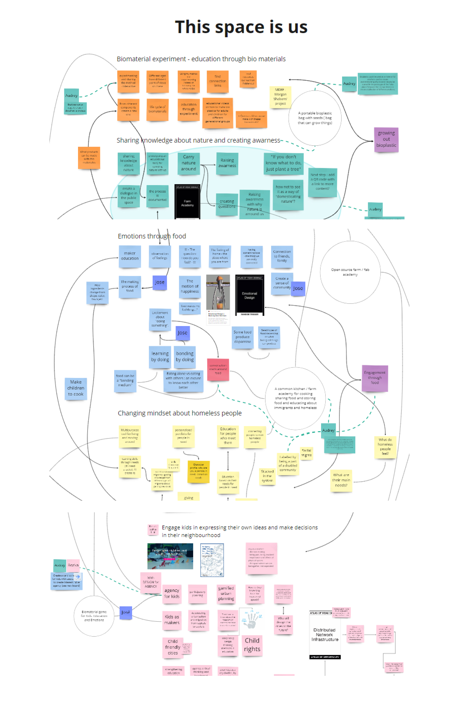
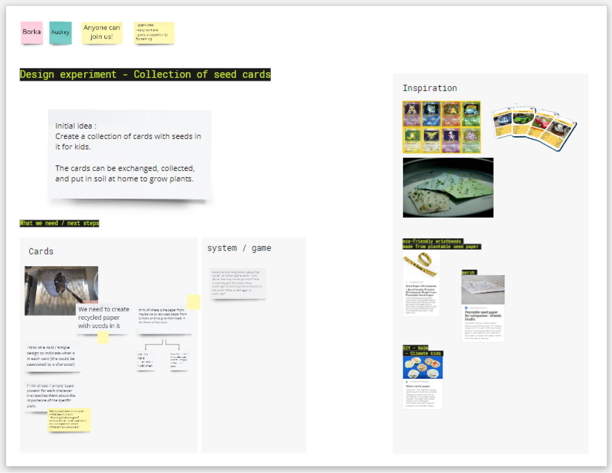

collective design spaces
We worked in smaller groups based on our collective design spaces. I joined the education group (which we had call Unlearning to learn).
Each one of us explained the prototype they had decided to make the previous week. The discussions that emerged gave us the opportunity to expand our collective design space and find new potential spaces for a common design intervention.
New ideas came up during the session and are documented in this design space.
position myself in the augmented design space
I can see myself exploring different areas of this new design space:
One is at the intersection between the biomaterial project and the idea of creating empathy towards nature : Bioplastic could be used as a material for artefacts used to create awareness/empathy toward nature. I would like to experiment to create a collection of different artefacts.
Another area is at the intersection between food / emotions and the discussion about homeless people in Barcelona.
I did investigation on inclusive public spaces and volunteered in homeless aid for some time. The topic of being able to cook and access healthy food for the most vulnerable population interests me a lot and I would like to experiment something to deepen the topic for example with a public kitchen accessible to all for free.
I would also like to be involved in projects that connect kids to nature and reflect on giving agency to kids. We started discussing a potential prototype about this with Borka, I will explain the initial idea below.

seedcards for kids Mixing Borka and I first prototypes, we plan to create a quick prototype that would be a collection of cards with seeds in it for kids.
The cards could be exchanged, collected, and put in soil at home to grow plants. It would be a way to raise awareness and empathy towards nature and integrate it in their everydaylife. We started a mini design space for it here and everyone is welcome to join or contribute.
foodcycle workshop As a group, we started thinking about a workshop we could create to mix our different prototypes. One idea was to organize a workshop to share knowledge about food and see it as a cycle. For the seed to growing plants, to cooking, to eating, to reusing waste (for example for biomaterials). It could be organized in a school in Poblenou if we want to target kids but we could also run a first version of the workshops by gathering our friends. To be continued!
